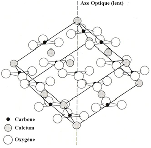
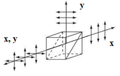

Quiconque a étudié les lois de Malus ou qui a manipulé des films polaroïds sait que ceux-ci filtrent la lumière de la manière suivante :
- Si l'on envoie une pluie de photons incohérents sur un film polariseur (idéal), une moitié seulement franchit l'obstacle, l'autre moitié est absorbée. Les photons sortants sont tous polarisés selon la direction passante du film.
Polariseurs croisés à 0°, 45°, 90°, 135°, 180°
- Si l'on dispose un second film polariseur en série derrière le premier et tourné d'un angle θ par rapport à lui, autour de l'axe optique, on constate qu'il fonctionne comme un détecteur qui absorbe la fraction 0.5 sin2θ de l'intensité initiale donc qui laisse passer la fraction complémentaire, 0.5 cos2θ . En particulier, si les polariseurs sont croisés à, θ = 90°, tous les photons sont détectés et aucune lumière n'émerge du dispositif. S'ils sont alignés (θ = 0°), aucun photon n'est détecté (le deuxième polariseur n'a eu aucun effet).
Polariseurs croisés (Théorie ondulatoire)
On interprète classiquement ces résultats en assimilant la lumière à une onde électromagnétique dont l'énergie est proportionnelle au carré du champ électrique. On admet que tout polariseur linéaire possède une direction (transversale) passante et la direction (transversale) orthogonale bloquante (absorbante) de sorte que seule passe la composante du champ électrique parallèle à la direction passante. La lumière sort donc du film polarisé linéairement selon sa direction passante du polariseur. Le hic c'est que cette interprétation est héritée de la théorie ondulatoire or l'expérience de Taylor démontre que la lumière est de nature corpusculaire.
Le film polariseur (polaroïd) est bon marché et d'un usage commode mais il ne convient pas pour la conception d'instruments d'optique précis. Il est peu fiable parce qu'il filtre mal la lumière, absorbant des photons qu'il devrait laisser passer et en laissant passer qu'il devrait absorber.
Les instruments précis sont taillés dans des matériaux isotropes constitués de verres purs d'indices de réfraction parfaitement connus et plus généralement dans des matériaux anisotropes constitués de cristaux biréfringents du type calcite (CaCO3). Un rappel sur la notion de biréfringence s'impose à ce stade.
Biréfringence optique.
Les photons issu d'une source naturelle (soleil, lampe à incandescence, led, ... ) sont dans un état de polarisation aléatoire (Leur hélicité est distribuée aléatoirement, Sz = -1, -1, +1, +1, +1, -1, +1, ...). Si l'on désire travailler sur un faisceau de photons tous polarisés de la même manière (linéaire ou circulaire, par exemple) il y a lieu de les préparer. On y parvient habituellement en recourant aux propriétés des matériaux biréfringents.
Le verre ordinaire présente une structure atomique régulière qui le rend isotrope : la lumière s'y propage avec la même vitesse, v = c/n, dans toutes les directions où c (≃ 3 108 m/s) est la vitesse dans le vide et n (typiquement de l'ordre de 1.5) est l'indice de réfraction du verre.

Cristal de calcite
Dans les matériaux anisotropes, la vitesse de la lumière varie selon la direction de propagation. Cette variation, régulée par les lois de la cristallographie, n'est simple que pour les cristaux uniaxes, en particulier la calcite (CaCO3). Dans celle-ci, les atomes sont disposés conformément à la maille élémentaire représentée ci-contre. Un axe unique (d'où l'appellation "cristal uniaxe") y joue un rôle essentiel, c'est l'axe optique encore appelé axe lent parce que c'est selon cette direction que la lumière se propage le plus lentement dans le cristal (à la vitesse, c/n0). La vitesse est maximum (c/ne) dans n'importe quelle direction orthogonale (et intermédiaire dans tous les autres cas).
Biréfringence (calcite)
Une lame de calcite, taillée de telle manière que l'axe optique se trouve dans le plan d'incidence, scinde un faisceau de lumière naturelle incidente en deux sous-faisceaux présentant, à la sortie, des états de polarisation linéaire différents mais orthogonaux. Les photons polarisés linéairement selon l'axe transversal Oy (orthogonal au plan d'incidence) suivent la trajectoire rectiligne attendue, tandis que ceux qui sont polarisés selon la direction perpendiculaire, Ox (donc dans le plan d'incidence), suivent une trajectoire anormale. Les deux trajectoires se séparent au point d'entrée dans le cristal, P, en faisant un petit angle, r, donné par la relation, tg(r) = [(no2 - ne2) sinα cosα]/[ no2 sin2α + ne2 cos2α ], où no et ne sont les indices de réfraction ordinaire (dans la direction parallèle à l'axe optique) et extraordinaire (dans la direction perpendiculaire). Posée sur une trame pré imprimée, cette lame fait donc apparaître deux images de celle-ci. Ce montage peut convenir toutes les fois que l'on désire préparer un faisceau désordonné de photons dans un état de polarisation donné, x ou y : il suffit d'occulter le sous-faisceau indésirable. D'autres montages sont possibles qui sont présentés in fine.
Lame biréfringente comme porte logique
Une lame biréfringente correctement taillée permet de fabriquer n'importe quelle porte logique quantique, en particulier une porte de Hadamard (en polarisation). Il convient toutefois de s'arranger pour que tous les photons émergents restent alignés selon l'axe optique, z. Pour cela il faut que r soit nul donc que tg(r) = 0. Cela n'est possible que si α est égal à 0° ou a 90°. Le cas, α = 0°, n'est pas intéressant car il revient à confondre l'axe de propagation, z, avec l'axe lent et, dans ce cas, tout se passe comme si la lumière traversait un verre ordinaire. Par contre, le cas, α = 90°, est intéressant : il correspond à une lame biréfringente taillée de telle manière que l'axe optique soit parallèle à la face d'entrée (donc perpendiculaire à la direction incidente, en vert sur la figure).
Cette configuration de lame permet de programmer, à la carte, les portes logiques quantiques utiles, il suffit d'ajuster ses deux degrés de libertés disponibles : l'angle, β, que fait l'axe optique avec l'axe x et l'épaisseur, L, de la lame, plus exactement l'angle de déphasage, δ = 2π Δn L/λ (où Δn = n0-ne, par exemple, 1.658 - 1.486 = 0.172 si λ = 590 nm) qu'elle induit du fait de la différence des vitesses des photons ordinaire et extraordinaire.
Selon les valeurs conférées à β et δ, la lame est capable de transformer n'importe quel état entrant en n'importe quel état sortant, en accord avec la relation, |état sortant> = Lame(β, δ) |état entrant>,
où l'opérateur Lame vaut, dans le cas général :
En pratique, on se contente de quelques cas particuliers (Lorsque δ = π, on parle de lame demi-onde et lorsque δ = π/2, on parle de lame quart d'onde) :
Lame(π/4,π) = i ( |0><1| + |1><0| ) inverse le qubit à un déphasage inessentiel près (Porte NOT)
Lame(π/8,π) = i ( |0><0| + |0><1| + |1><0| - |1><1| )/✓2 fournit la porte de Hadamard
Lame[0,φ] = exp[-iφ/2] ( exp[iφ]|0><0| + |1><1|) constitue une porte de déphasage de &phi
Lame(π/4, π/2) = ( |0><0| + i |0><1| + i |1><0| + |1><1| )/✓2 convertit un photon polarisé linéairement en un photon polarisé circulairement, par exemple |0> devient (|0>+i|1>)/✓2.
Complément. Pour préparer un faisceau de photons |x> (ou |y>) à partir d'un faisceau naturel, au moins trois stratégies fiables peuvent être envisagées (seule la deuxième a été évoquée ci-avant) :
Préparation d'états purs (1)
Une simple lame de verre, d'indice n, orientée sous l'angle d'incidence de Brewster, i = arctg(n),
a pour effet de ne réfléchir directement que des photons polarisés linéairement selon y (perpendiculairement au plan d'incidence). Ce sous-faisceau émergent est certes diminué en intensité mais il est pur en polarisation rectiligne. On ne garde que les photons ayant subi la réflexion principale et on écarte les photons ayant subi des réflexions multiples au moyen d'écrans absorbants. .
Préparation d'états purs (2)
Une lame biréfringente uniaxe taillée de telle manière que son axe lent soit orienté selon l'angle α dans le plan d'incidence sépare les photons x et y selon deux trajectoires dites ordinaire (photons y) et extraordinaire (photons x). L'angle de séparation, r, est optimal lorsque α = 0.5 arccos[(no2 - ne2)/(no2 + ne2) ] (de l'ordre de 41,6°, à λ = 590 nm) et il vaut : ropt = arctg[ 0.5(no2 - ne2)/(no ne) ], de l'ordre de 6.2°, à λ = 590 nm. On peut utiliser un écran pour absorber les photons du type non désiré.

Préparation d'états purs (3)
Il est également possible d'accoler deux prismes rectangles biréfringents, faces hypoténuses l'une contre l'autre et cimentées par une colle d'indice convenable afin que les photons des deux types se séparent à angle droit. Il est même possible de s'arranger pour qu'ils le fassent dans des proportions égales, 50-50 %. Ce dispositif répond au nom de prisme séparateur polarisant.